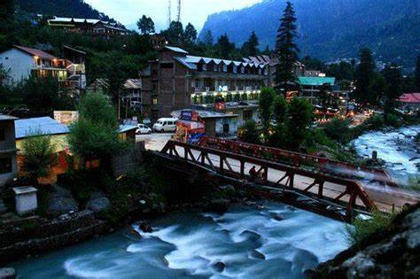

Images

Description
Old Manali is a hidden gem of Himachal Pradesh that offers a perfect blend of nature, culture, adventure, and relaxation. It is located 3 km uphill from the main town of Manali, across the Manalsu River. It is famous for its apple orchards, quaint guesthouses, and cosy cafes that offer a variety of cuisines and live music.